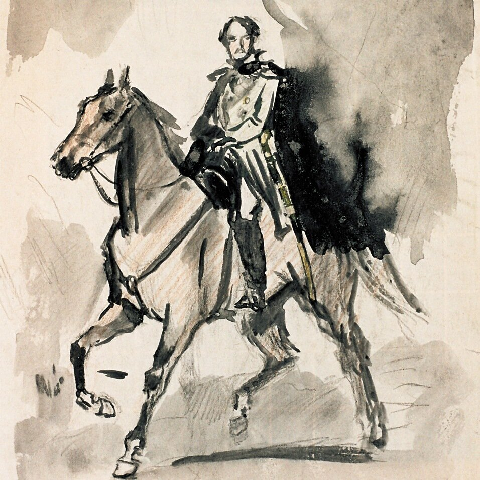

Герой нашего времени

Предисловие
Во всякой книге предисловие есть первая и вместе с тем последняя вещь; оно или служит объяснением цели сочинения, или оправданием и ответом на критики. Но обыкновенно читателям дела нет до нравственной цели и до журнальных нападок, и потому они не читают предисловий. А жаль, что это так, особенно у нас. Наша публика так еще молода и простодушна, что не понимает басни, если в конце ее на находит нравоучения. Она не угадывает шутки, не чувствует иронии; она просто дурно воспитана. Она еще не знает, что в порядочном обществе и в порядочной книге явная брань не может иметь места; что современная образованность изобрела орудие более острое, почти невидимое и тем не менее смертельное, которое, под одеждою лести, наносит неотразимый и верный удар. Наша публика похожа на провинциала, который, подслушав разговор двух дипломатов, принадлежащих к враждебным дворам, остался бы уверен, что каждый из них обманывает свое правительство в пользу взаимной нежнейшей дружбы.
Эта книга испытала на себе еще недавно несчастную доверчивость некоторых читателей и даже журналов к буквальному значению слов. Иные ужасно обиделись, и не шутя, что им ставят в пример такого безнравственного человека, как Герой Нашего Времени; другие же очень тонко замечали, что сочинитель нарисовал свой портрет и портреты своих знакомых... Старая и жалкая шутка! Но, видно, Русь так уж сотворена, что все в ней обновляется, кроме подобных нелепостей. Самая волшебная из волшебных сказок у нас едва ли избегнет упрека в покушении на оскорбление личности!
Герой Нашего Времени, милостивые государи мои, точно, портрет, но не одного человека: это портрет, составленный из пороков всего нашего поколения, в полном их развитии. Вы мне опять скажете, что человек не может быть так дурен, а я вам скажу, что ежели вы верили возможности существования всех трагических и романтических злодеев, отчего же вы не веруете в действительность Печорина? Если вы любовались вымыслами гораздо более ужасными и уродливыми, отчего же этот характер, даже как вымысел, не находит у вас пощады? Уж не оттого ли, что в нем больше правды, нежели бы вы того желали?..
Вы скажете, что нравственность от этого не выигрывает? Извините. Довольно людей кормили сластями; у них от этого испортился желудок: нужны горькие лекарства, едкие истины. Но не думайте, однако, после этого, чтоб автор этой книги имел когда-нибудь гордую мечту сделаться исправителем людских пороков. Боже его избави от такого невежества! Ему просто было весело рисовать современного человека, каким он его понимает, и к его и вашему несчастью, слишком часто встречал. Будет и того, что болезнь указана, а как ее излечить — это уж бог знает!
Часть первая
I
Бэла
Я ехал на перекладных из Тифлиса. Вся поклажа моей тележки состояла из одного небольшого чемодана, который до половины был набит путевыми записками о Грузии. Большая часть из них, к счастию для вас, потеряна, а чемодан с остальными вещами, к счастью для меня, остался цел.
Уж солнце начинало прятаться за снеговой хребет, когда я въехал в Койшаурскую долину. Осетин-извозчик неутомимо погонял лошадей, чтоб успеть до ночи взобраться на Койшаурскую гору, и во все горло распевал песни. Славное место эта долина! Со всех сторон горы неприступные, красноватые скалы, обвешанные зеленым плющом и увенчанные купами чинар, желтые обрывы, исчерченные промоинами, а там высоко-высоко золотая бахрома снегов, а внизу Арагва, обнявшись с другой безыменной речкой, шумно вырывающейся из черного, полного мглою ущелья, тянется серебряною нитью и сверкает, как змея своею чешуею.
Подъехав к подошве Койшаурской горы, мы остановились возле духана. Тут толпилось шумно десятка два грузин и горцев; поблизости караван верблюдов остановился для ночлега. Я должен был нанять быков, чтоб втащить мою тележку на эту проклятую гору, потому что была уже осень и гололедица, — а эта гора имеет около двух верст длины.
Нечего делать, я нанял шесть быков и нескольких осетин. Один из них взвалил себе на плечи мой чемодан, другие стали помогать быкам почти одним криком.
За моею тележкою четверка быков тащила другую как ни в чем не бывало, несмотря на то, что она была доверху накладена. Это обстоятельство меня удивило. За нею шел ее хозяин, покуривая из маленькой кабардинской трубочки, обделанной в серебро. На нем был офицерский сюртук без эполет и черкесская мохнатая шапка. Он казался лет пятидесяти; смуглый цвет лица его показывал, что оно давно знакомо с закавказским солнцем, и преждевременно поседевшие усы не соответствовали его твердой походке и бодрому виду. Я подошел к нему и поклонился: он молча отвечал мне на поклон и пустил огромный клуб дыма.
— Мы с вами попутчики, кажется?
Он молча опять поклонился.
— Вы, верно, едете в Ставрополь?
— Так-с точно... с казенными вещами.
— Скажите, пожалуйста, отчего это вашу тяжелую тележку четыре быка тащат шутя, а мою, пустую, шесть скотов едва подвигают с помощью этих осетин?
Он лукаво улыбнулся и значительно взглянул на меня.
— Вы, верно, недавно на Кавказе?
— С год, — отвечал я.
Он улыбнулся вторично.
— А что ж?
— Да так-с! Ужасные бестии эти азиаты! Вы думаете, они помогают, что кричат? А черт их разберет, что они кричат? Быки-то их понимают; запрягите хоть двадцать, так коли они крикнут по-своему, быки все ни с места... Ужасные плуты! А что с них возьмешь?.. Любят деньги драть с проезжающих... Избаловали мошенников! Увидите, они еще с вас возьмут на водку. Уж я их знаю, меня не проведут!
— А вы давно здесь служите?
— Да, я уж здесь служил при Алексее Петровиче, — отвечал он, приосанившись. — Когда он приехал на Линию, я был подпоручиком, — прибавил он, — и при нем получил два чина за дела против горцев.
— А теперь вы?..
— Теперь считаюсь в третьем линейном батальоне. А вы, смею спросить?..
Я сказал ему.
Разговор этим кончился и мы продолжали молча идти друг подле друга. На вершине горы нашли мы снег. Солнце закатилось, и ночь последовала за днем без промежутка, как это обыкновенно бывает на юге; но благодаря отливу снегов мы легко могли различать дорогу, которая все еще шла в гору, хотя уже не так круто. Я велел положить чемодан свой в тележку, заменить быков лошадьми и в последний раз оглянулся на долину; но густой туман, нахлынувший волнами из ущелий, покрывал ее совершенно, ни единый звук не долетал уже оттуда до нашего слуха. Осетины шумно обступили меня и требовали на водку; но штабс-капитан так грозно на них прикрикнул, что они вмиг разбежались.
— Ведь этакий народ! — сказал он, — и хлеба по-русски назвать не умеет, а выучил: «Офицер, дай на водку!» Уж татары по мне лучше: те хоть непьющие...
До станции оставалось еще с версту. Кругом было тихо, так тихо, что по жужжанию комара можно было следить за его полетом. Налево чернело глубокое ущелье; за ним и впереди нас темно-синие вершины гор, изрытые морщинами, покрытые слоями снега, рисовались на бледном небосклоне, еще сохранявшем последний отблеск зари. На темном небе начинали мелькать звезды, и странно, мне показалось, что оно гораздо выше, чем у нас на севере. По обеим сторонам дороги торчали голые, черные камни; кой-где из-под снега выглядывали кустарники, но ни один сухой листок не шевелился, и весело было слышать среди этого мертвого сна природы фырканье усталой почтовой тройки и неровное побрякиванье русского колокольчика.